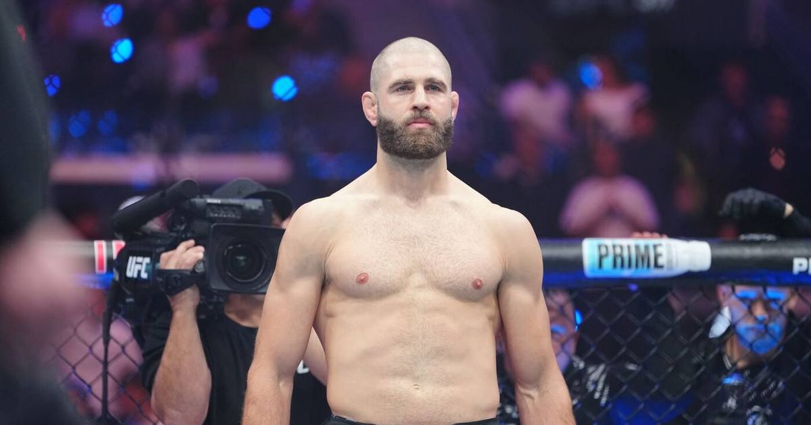

Procházka and Stirling make weight for Doha main event
Jiří Procházka and Navajo Stirling both hit 205 pounds at Friday's official weigh-ins, locking in Saturday's five-round UFC Qatar main event in Doha — with one fighter missing weight on the prelims.

Disclosure: this post contains affiliate links. I earn a commission on qualifying purchases.
UFC Qatar is official. Former light heavyweight champion Jiří Procházka and undefeated contender Navajo Stirling both hit 205 pounds at Friday's official weigh-ins in Doha, locking in their five-round main event for Saturday, November 21, at ABHA Arena.
Procházka was first to the scale. Of the 24 fighters on the 12-bout card, only one missed weight.
What's at stake
This is a comeback fight for Procházka and a coronation shot for Stirling, and the stakes cut both ways.
Procházka (32-6-1 MMA, 6-3 UFC) returns for the first time since Carlos Ulberg knocked him out in the first round at UFC 327 in April, in a fight for the division's vacant title. Before that setback, the Czech striker had knocked out Khalil Rountree Jr. in the third round and Jamahal Hill. Ranked No. 2 at light heavyweight, he needs a win here to get back into the title picture — and he took the fight knowing the risk. Stirling trains at City Kickboxing alongside Ulberg, the man who just beat him, and Procházka has said openly he didn't want the matchup at first because Stirling is the lower-ranked fighter from the same camp.
Stirling (11-0 MMA, 6-0 UFC) walks into the biggest fight of his career on a tear. The 29-year-old has finished three straight opponents by knockout in 2026 — Bruno Lopes, Ion Cuțelaba, and, most recently, former champion Jan Błachowicz in the first round at UFC Belgrade in August. Saturday is his first UFC main event, and a win over a former champion puts him squarely in the title conversation.
The rest of the card
The co-main event pairs another former champion with a rising contender: ex-bantamweight titleholder Aljamain Sterling meets hard-hitting featherweight Kevin Vallejos, with Sterling chasing a third straight win. Both men made 145 pounds.
The rest of the main card is stacked too — Dan Hooker vs. Brian Ortega at lightweight, Kyoji Horiguchi vs. Asu Almabayev at flyweight, and Jared Cannonier vs. Ikram Aliskerov at middleweight.
One miss on the scale
The only hiccup came at welterweight. Tahir Abdullayev weighed 172 pounds for his prelim bout against Jake Matthews, one pound over the non-title limit. He forfeits 20 percent of his purse to Matthews, and the fight goes ahead as scheduled at a catchweight.
Official weigh-in results
Main card (Paramount+, 1 p.m. ET)
Jiří Procházka vs. Navajo Stirling: 205 vs. 205
Aljamain Sterling vs. Kevin Vallejos: 145 vs. 145
Dan Hooker vs. Brian Ortega: 156 vs. 155.5
Kyoji Horiguchi vs. Asu Almabayev: 126 vs. 125.5
Jared Cannonier vs. Ikram Aliskerov: 185 vs. 185.5
Prelims (Paramount+, 10 a.m. ET)
Aleksandre Topuria vs. Santiago Luna: 136 vs. 136
Shamil Gaziev vs. Tallison Teixeira: 262 vs. 253
Amir Albazi vs. Alessandro Costa: 126 vs. 126
Jake Matthews vs. Tahir Abdullayev: 170 vs. 172*
Nikolas Motta vs. Dom Mar Fan: 155.5 vs. 156
Diyar Nurgozhay vs. Alik Lorenz: 205 vs. 205
Shoaib Yousaf vs. John Mitchell: 156 vs. 155.5
\* Abdullayev missed weight by one pound.
How to watch
UFC Fight Night 294 streams in its entirety on Paramount+ on Saturday, November 21. Prelims start at 10 a.m. ET, and the main card follows at 1 p.m. ET. The UFC returns to Doha after last year's debut event in Qatar.
Watch
Source: UFC Qatar: Ceremonial Weigh-In (UFC) — the official ceremonial weigh-in stream from Doha, with both headliners hitting the scale and the final faceoffs ahead of Saturday's card.
Gear up: UFC gear (walkout shirts, replica fight kits, event apparel): via Fanatics